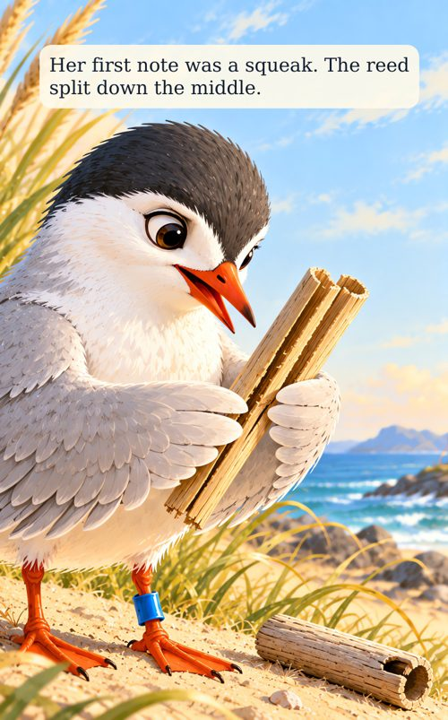
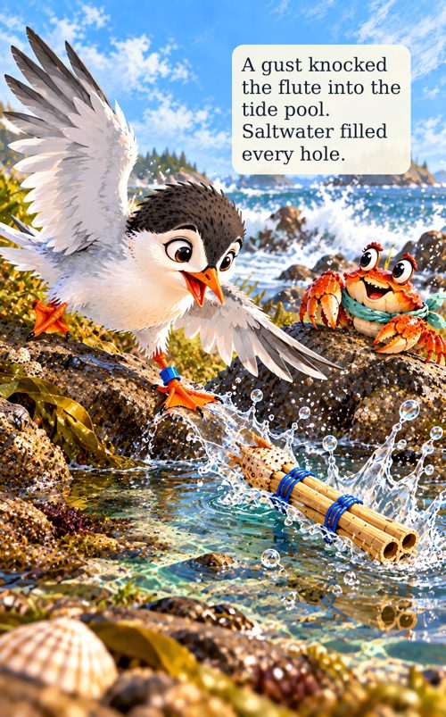
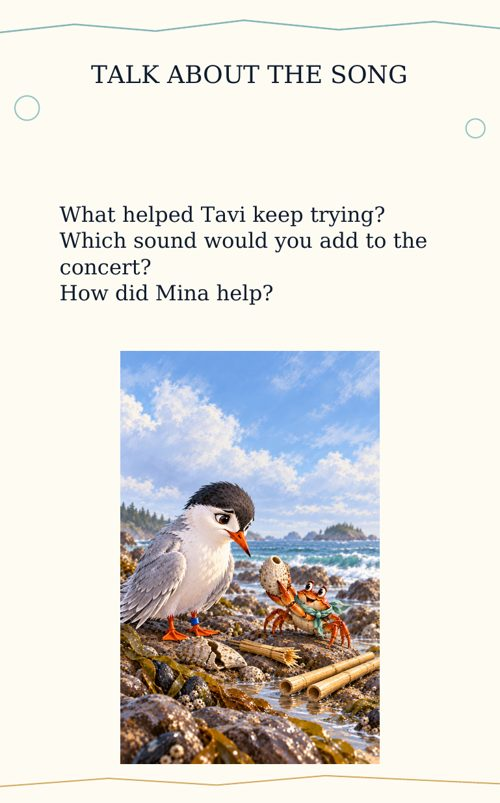
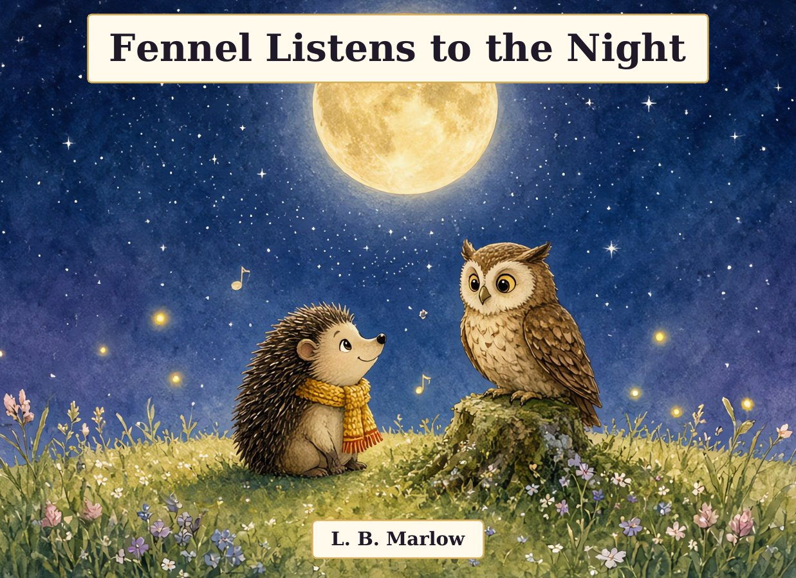

About the book
Tavi is a small black-capped tern with a big wish: to add a song of her own to the village concert on the rocky shore. But her first reed flute only squeaks, the next one makes no sound at all, and a shell cracks along the way.
With her kind crab friend Mina beside her, Tavi keeps trying. She listens to the wind in the beach grass, ties two strong reeds together with blue cord, and finally finds one clear note. Then a sudden gust knocks her flute into the tide pool. Can a little bird, a good friend and a handful of dry sea grass bring the music back before sunset?
When the village players answer with drum, bell and clap, Tavi learns that a song can be built one try at a time.
Who it's for
- Children ages 3 to 6 and the grown-ups who read with them
- Bedtime and read-aloud time: a warm story about perseverance, problem-solving and friendship
- Preschool and kindergarten teachers, librarians and homeschool families looking for a seaside story
- Kids who love birds, crabs, tide pools and making music
Inside the book



Two activity pages at the end: “Talk about the song” questions and a “Draw a shore song” activity.
Get it on AmazonAlso by L. B. Marlow: Fennel Listens to the Night

Fennel the little hedgehog is afraid of the dark. One night Mama takes her into the meadow to listen. She meets Fiddle the cricket, Pell the moth, Plum the frog, and kind Grandmother Oakley the owl. Fennel learns that the dark is not empty — it is full of friends. You just have to listen.
Paperback picture book · 24 pages · ages 3 to 6
Story and illustrations made with the help of AI.
Get Fennel Listens to the Night on Amazon